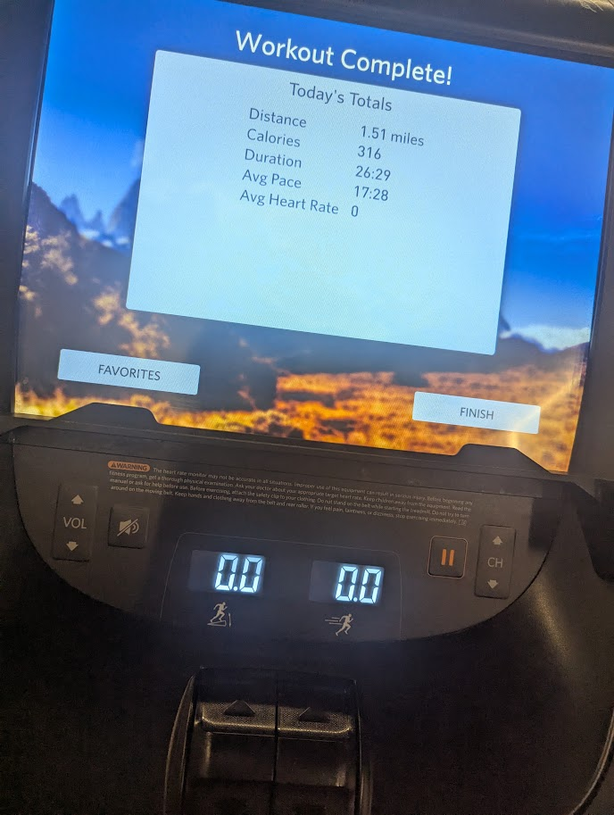
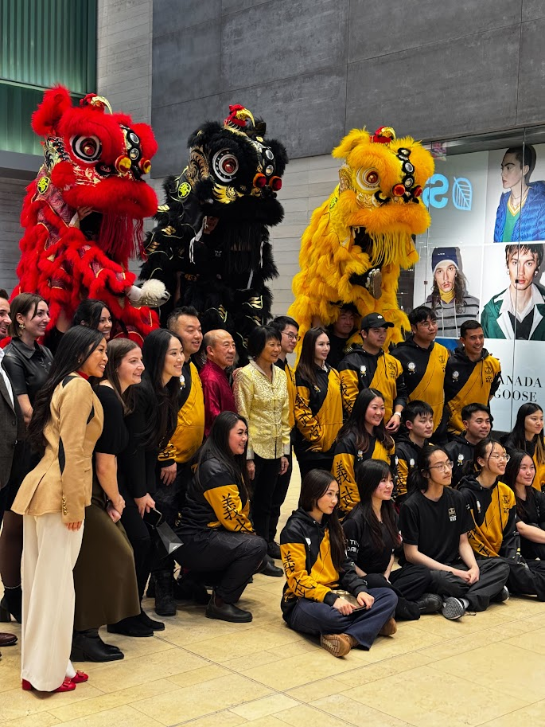
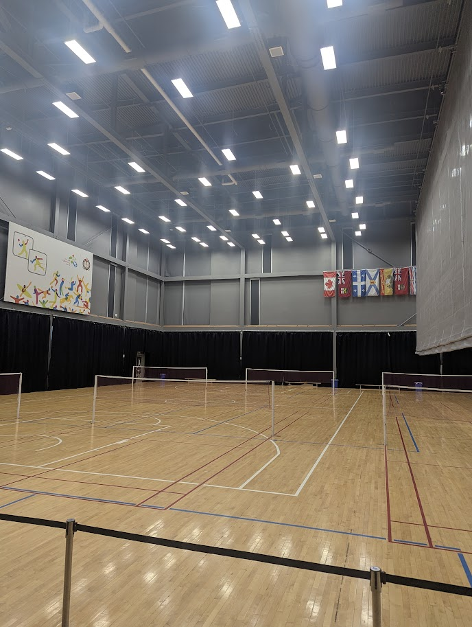
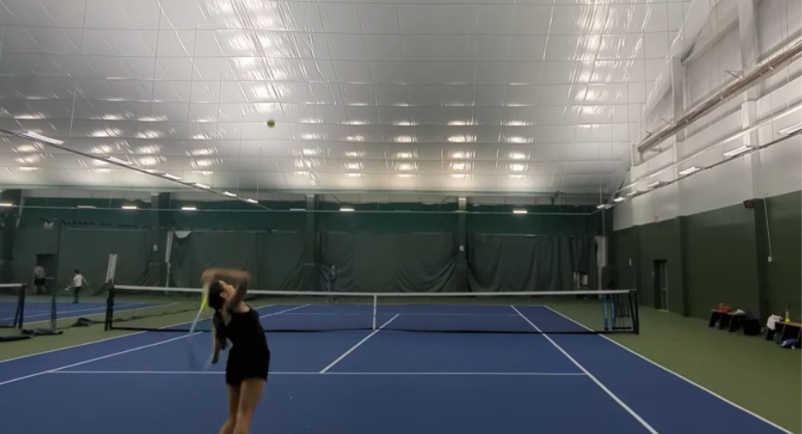

Training Days
Consistency, movement, and steady progress.
Some of the things I enjoy doing and exploring.

Consistency, movement, and steady progress.

A lively tradition, practiced with focus and teamwork.

Sports, movement, and energy.

Practice, movement, and finding a rhythm on court.
A personal reflection
What building with a team taught me about engineering, iteration, and solving real-world problems.
I used to think of engineering as simply building machines, but I’ve come to respect the highly iterative engineering process that drives meaningful solutions thanks to hackathons. My first hackathon was UTRA Hacks, hosted at UofT. At this two-day event, I worked in a team of five to create a robot capable of navigating a complex race course using allocated hardware. When I first learned of the task, I completely disregarded the core aspects of the engineering process and started building and programming with no plan. Although our team progressed farther than multiple university student-led teams, we had plenty of issues.
After working for a day, our test run revealed that our infrared sensors did not work. With barely any time left, we tried troubleshooting the hardware limits with AI, but our efforts couldn't solve the physical flaw. Recognizing we needed real-world insight, I struck up a conversation with an adjacent team, complaining about the faultiness of the sensors. They explained how they had replaced their infrared sensors the day before with a single colour sensor and a pivot-and-readjust movement. Unfortunately, our team did not have enough time to implement this key strategy, so in a last-ditch effort, we hard-coded the movement portion of our robot based on estimations. This experience taught me that testing should be conducted continuously throughout a project timeline, and projects should start with a “minimum viable product” that can execute the most basic task.
Recently, I joined another hackathon called MathHacks with the same team. We had learned a lot from UTRA Hacks, and after spending time working on side projects, practicing math contests, and founding a math club together, our team was much more organized. Through MathHacks, I explored various mathematical modeling concepts and came up with an idea that could address a real-world problem I was passionate about. After actualizing my idea with my team, I realized I love the concept of creating new innovations and solving real-world problems. I have taken this newfound passion further by maintaining a digital log of interesting problems I notice in daily life alongside my own conceptual solutions. These ideas inspire me to build new projects, and I look forward to using engineering and technology to actualize them.
I am extremely grateful for these opportunities, as hackathons have taught me so much about project management, the engineering lifecycle, presentation skills, and myself.
A personal reflection
How making space for creativity taught me to balance a full schedule.
From practicing painting and sketching since childhood to discovering my passion for digital illustration in elementary school, art has long been my creative outlet. However, as commitments such as robotics, a part-time job, math club, competitive sports, and advanced coursework intensified, maintaining my artistic workflow became unsustainable. I couldn't abandon art, so I had to radically restructure my schedule. I learned to treat creative time with structured discipline, evaluating my workload every week and allotting myself a predetermined time for art. This schedule redesign taught me invaluable time management skills, balancing technical problem-solving with creative expression.
At Waterloo, the rigorous engineering curriculum and fast-paced co-op terms will demand exceptional organizational skills. By mastering how to prioritize heavy academic workloads, but still schedule time for my passions and hobbies on the side, I have built the personal discipline necessary to thrive in Waterloo's demanding environment without sacrificing my various unique interests.